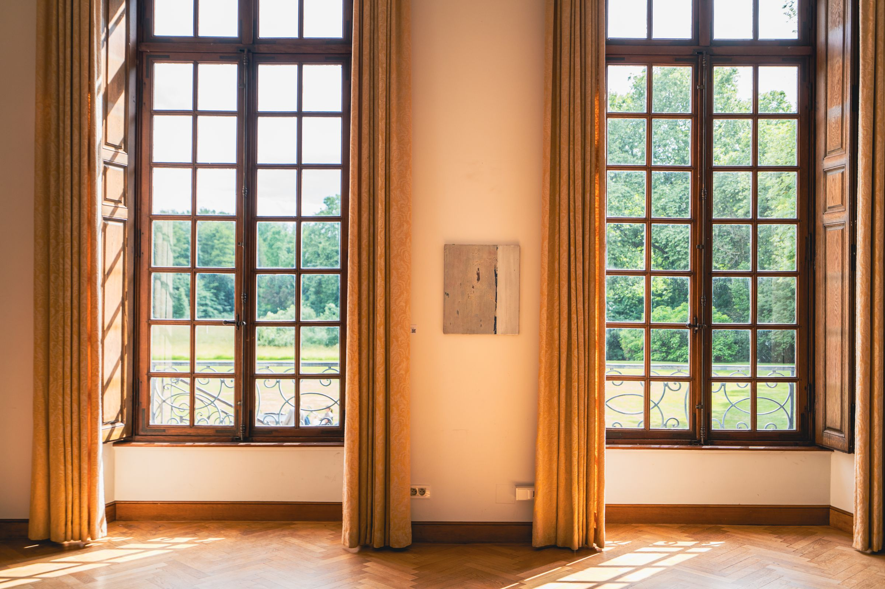

Rayane Al Shouli
Photographe & Vidéaste
Strasbourg, Alsace
Réalisateur de courts-métrages et de fictions, photographe de mariage, d’événements et culinaire à Strasbourg et en Alsace
À propos : Rayane Al Shouli, photographe et vidéaste à Strasbourg
Réalisateur et photographe basé à Strasbourg, Rayane Al Shouli accompagne particuliers et professionnels à travers une approche visuelle haut de gamme et cinématographique.
Spécialisé dans le reportage de mariage, la photographie culinaire, le contenu de marque pour entreprises et les événements en Alsace.
Réalisations : photographe, vidéaste et réalisateur à Strasbourg, photo et vidéo

Vidéo
Strasbourg, Alsace
Photo
Strasbourg, Alsace30+ clients accompagnés
Avis clients 5,0 / 5 · Google
Très beau travail de captation vidéo avec Rayane ! Il a su capturer l’ambiance de notre événement avec un rendu très propre et pro. Je recommande sans hésiter si vous cherchez un vidéaste sur Strasbourg et en Alsace.
Super photo, une personne à l’écoute et très professionnelle.
Je recommande vivement Rayane ! Très pro, appliqué et un regard artistique. Allez-y les yeux fermés !
Photographe et vidéaste en Alsace
Basé à Strasbourg, je réalise vos reportages photo et vos films partout en Alsace : Strasbourg, Colmar, Mulhouse, Haguenau, Schiltigheim, Illkirch-Graffenstaden et dans tout le Bas-Rhin et le Haut-Rhin.
Photographe de mariage, de shooting et de photographie culinaire, vidéaste pour les marques, les restaurateurs et les événements, réalisateur de courts-métrages : chaque projet reçoit la même exigence, une image sobre, soignée et fidèle à votre histoire.
Un projet en tête ? Demandez votre devis, je vous réponds rapidement.